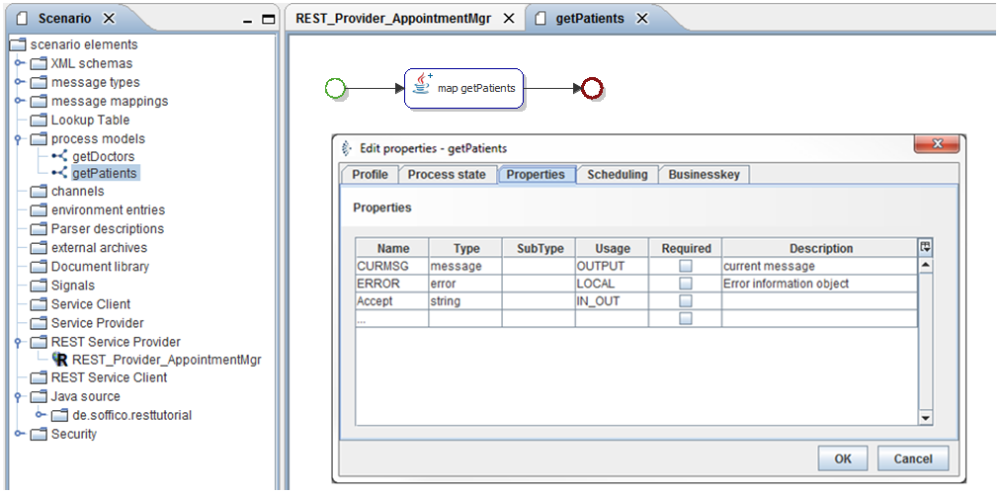
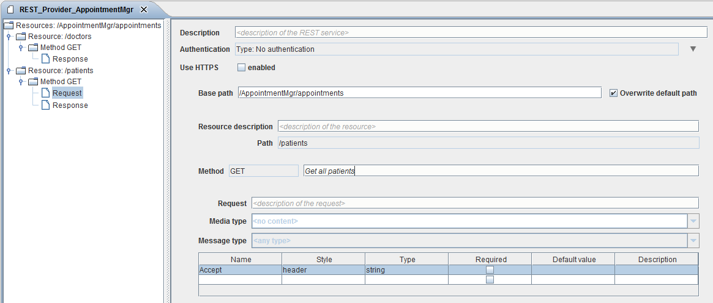
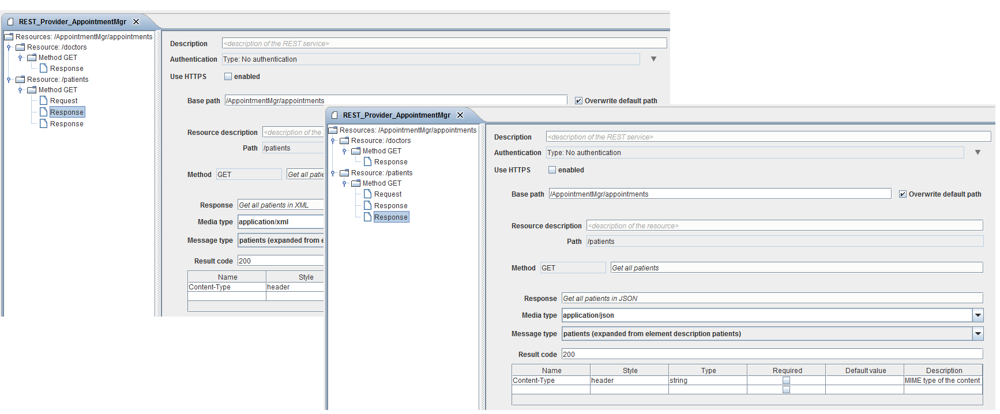
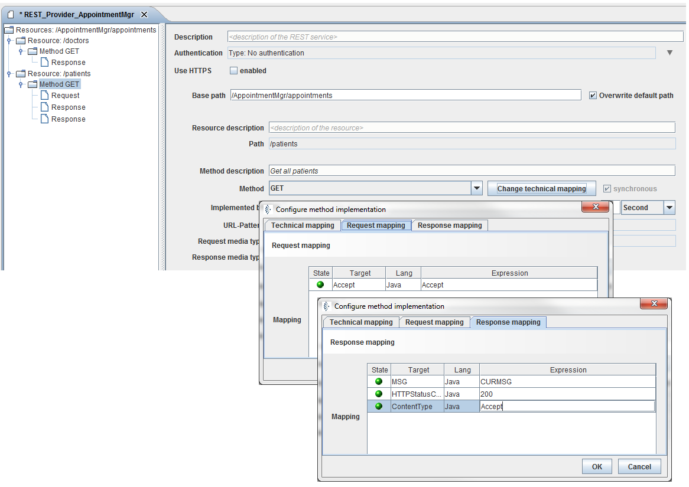
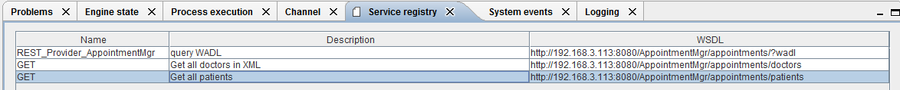
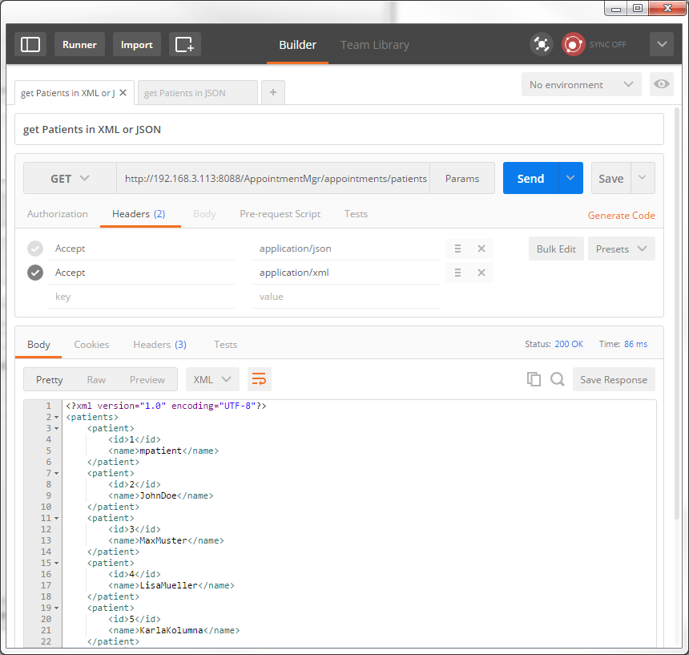

Listing all patients in XML or JSON (Method GET)

Topic content
In this chapter we will create a Orchestra REST Provider implementation to get a list of all patients but this time Orchestra has to decide if the Response is XML or JSON.
http://localhost:8080/AppointmentMgr/appointments/patients
1.Copy your scenario from chapter 5.4.3 Listing all patients in XML (Method GET).
2.Open the Properties of your process model. Add a string variable “Accept” with Usage IN_OUT.

Figure 79 – Listing all patients in XML or JSON – Process Modell Properties
3.Open the REST Service Provider REST_Provider_Appointment.
4.Insert a Request for the Method GET.
5.Add a Parameter Accept with Style Header and Type string.

Figure 80 – Listing all patients in XML or JSON – Resource /patients Response Configuration
6.Add an additional Response for the Method GET.
7.Set the Media type of the Response to application/json, select the Message type patients and set the Result code 200.

Figure 81 – Listing all patients in XML or JSON – Two different Respones
8.Select the Metod GET at the treeview.
9.Click the button change technical mapping.
10.Assign the variable Accept to Target Accept at register Request mapping.
11.Use the variable Accept of the process model for the target ContentType at register Response mapping.

Figure 82 – Listing all patients in XML or JSON – Resource /patients technical mapping of Method GET
12.Start your Test engine and select register Service registry at the Testengine-Panel. Here you get the Endpoints for your REST Provider.

Figure 83 – Listing all patients in XML or JSON – Testengine Service registry.
13.Copy the link for the patients resource to your Postman application set the Method to GET and send the request If every thing is fine you’ll get following response (See screenshot).
Hint: If you don’t have installed Postman yet, have a look at chapter 3.2.3 Postman addon Google Chrome.
14.Copy the link for the patients resource to your Postman application set the Method to GET, create an Accept = “application/json” and Accept = “application/xml” (You can deside, which one you want to send by check or uncheck the parameter) and send the request. If every thing is fine you’ll get following response (See screenshot).

Figure 84 – Postman Trace: Listing all patients in XML or JSON depending on Accept Header
Hint: The traces will be the same as in chapter 5.4.3 Listing all patients in XML (Method GET) for Accept = “application/xml” and as in chapter 5.4.4 Listing all patients in JSON (Method GET) for JSON